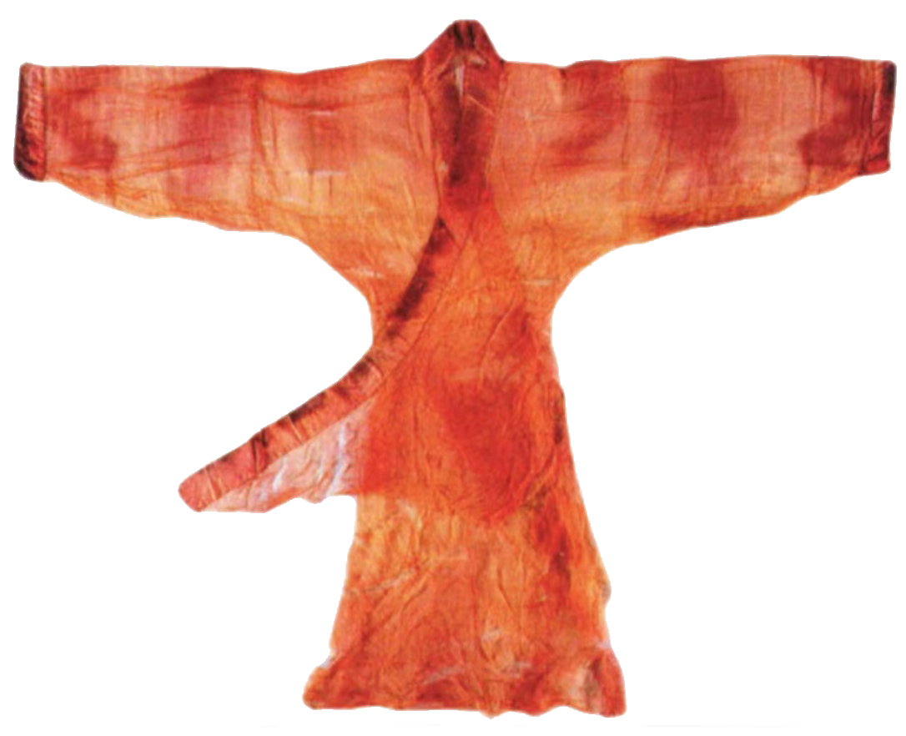

《
秦汉时期女子汉服的形制
秦汉时期女子汉服的形制主要包括曲裾 、直裾、襦裙等。
曲裾是秦汉时期女子常穿的一种服装。 其特点是后片衣襟接长，加长后的衣襟形成三角，绕襟的周数分为单绕、双绕、三绕，衣长的长短分为长曲裾和短曲裾。曲裾出现的原因，与最初没有连裆的罩裤有关，下摆有了这样几重保护就符合理并合礼得多，因此，曲裾深衣在未发明袴的先秦至汉代较为流行。
直裾的特点是衣襟从膝盖处向下垂直，形状类似于现在的旗袍。直裾在秦汉时期也较为流行，尤其是在贵族女子中穿着。
襦裙是一种上下分割的汉服，上衣为紧身襦，下摆为宽松的裙子，通常以腰带系扎.襦裙的色彩较为丰富，其中以红、黄、绿等颜色最为常见。
此外，秦汉时期的女子汉服还有上衣下裳、深衣、襦裙等形制，上衣下裳是将上衣和下裳分开穿着，深衣是指上下缝合的服装，通常穿于襦裙外，里面需要中衣、裤、裙为衬。襦裙则是一种上下分割的汉服，上衣为紧身襦，下摆为宽松的裙子。
。
秦始皇深受阴阳五行学说影响，相信秦克周，应当是水克火，因为周朝是“火气胜金，色尚赤”，所以颜色崇尚黑色。
这样，在秦朝，黑色为尊贵的颜色，衣饰也以黑色为时尚。
汉朝时期，深衣和胡服开始推广。深衣将过去上下不相连的衣裳连接在一起，所以叫深衣。它的下摆不开衩，而是将衣襟接长，向后拥，即所谓的“续衽钩边”。深衣在战国时相当流行。
相传秦昭王的夫人得到了一件珍贵的皮草，非常高兴，于是劝说秦昭王先不要杀孟尝君。秦昭王怕夫人不高兴，只好让人把孟尝君先放了。得到了皮裘后，秦昭王的夫人并不满足，还想再要一件，无奈之下，孟尝君只得趁着秦王对他放下防备，带着一帮人趁夜逃跑了。
另有一种名为绵袴的不合裆的夹裤以及一种名为单裙的半裙。
》